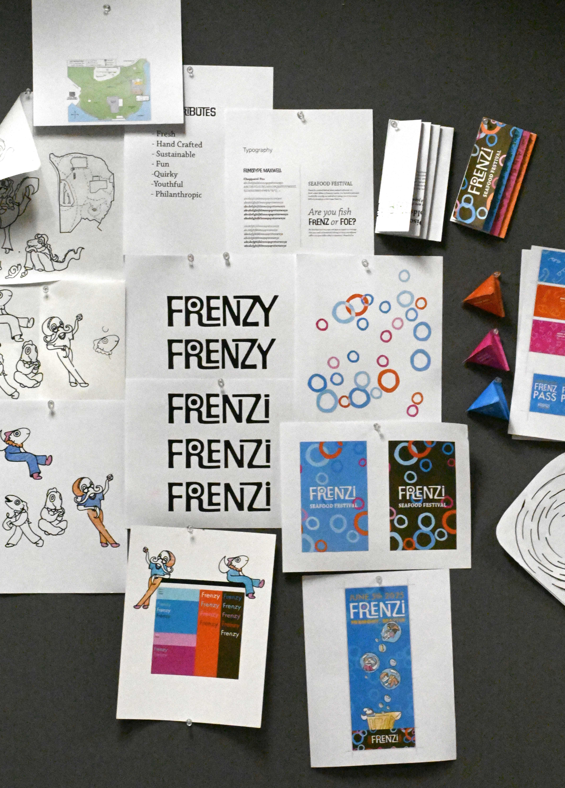
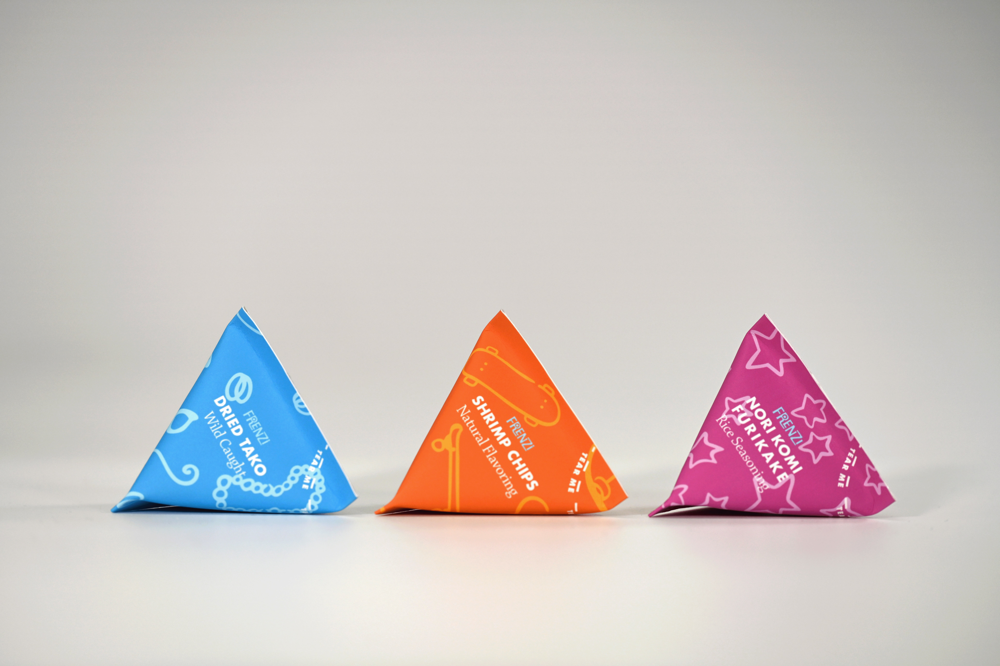
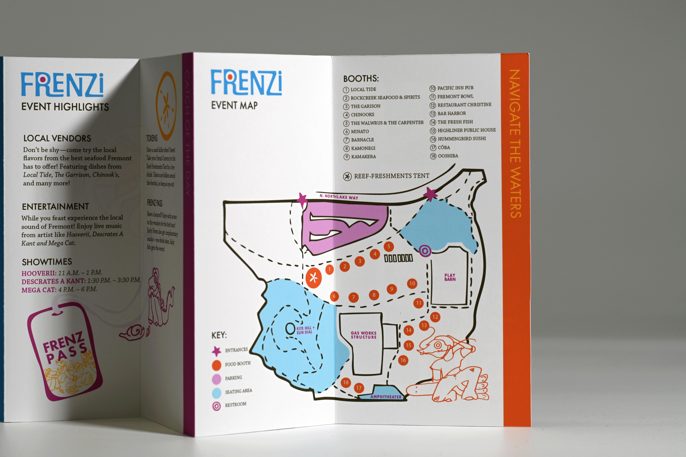
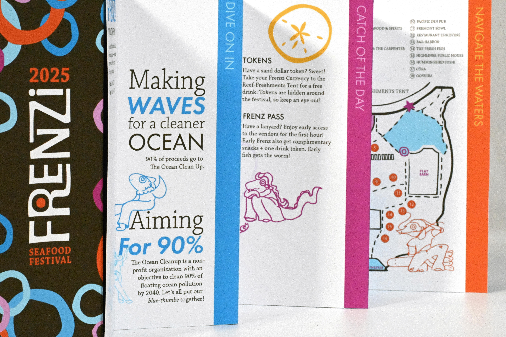
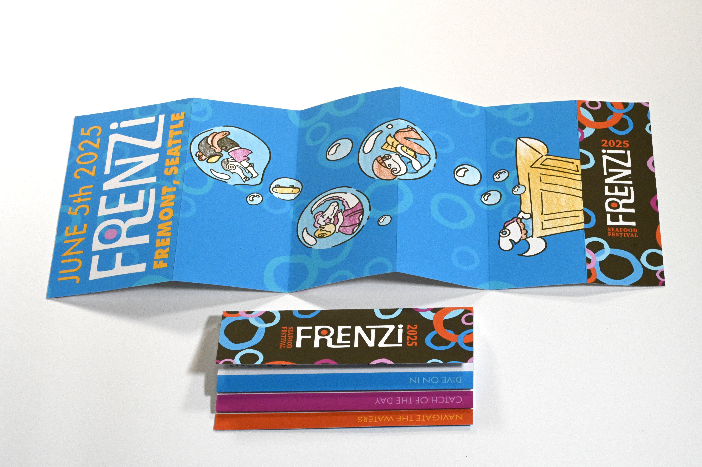
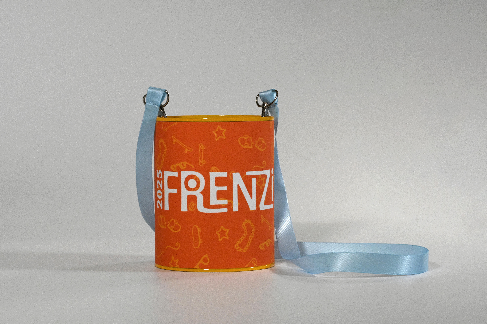
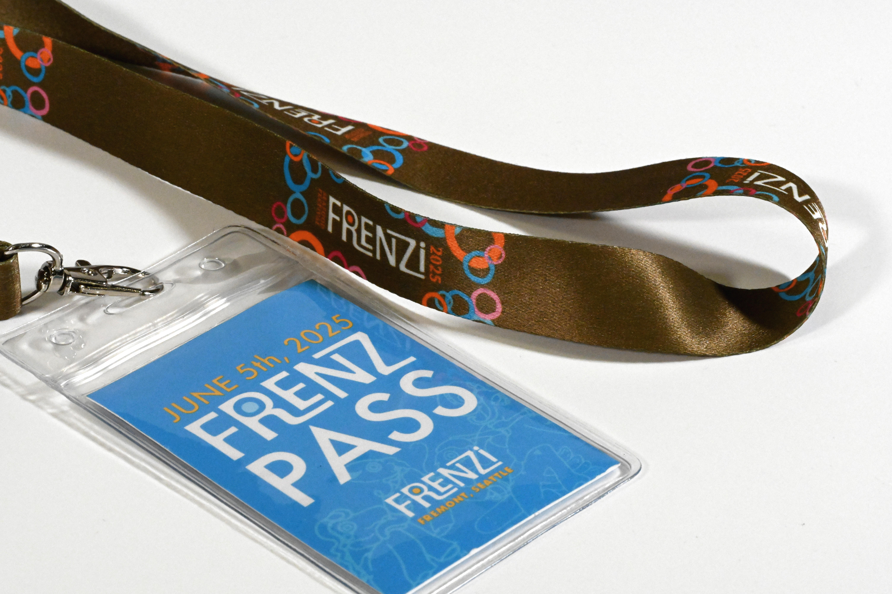
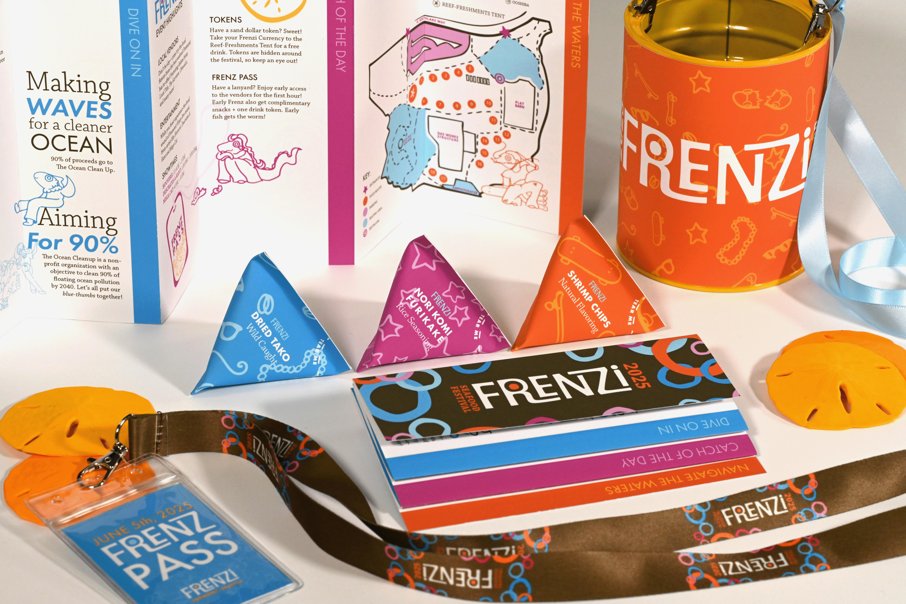
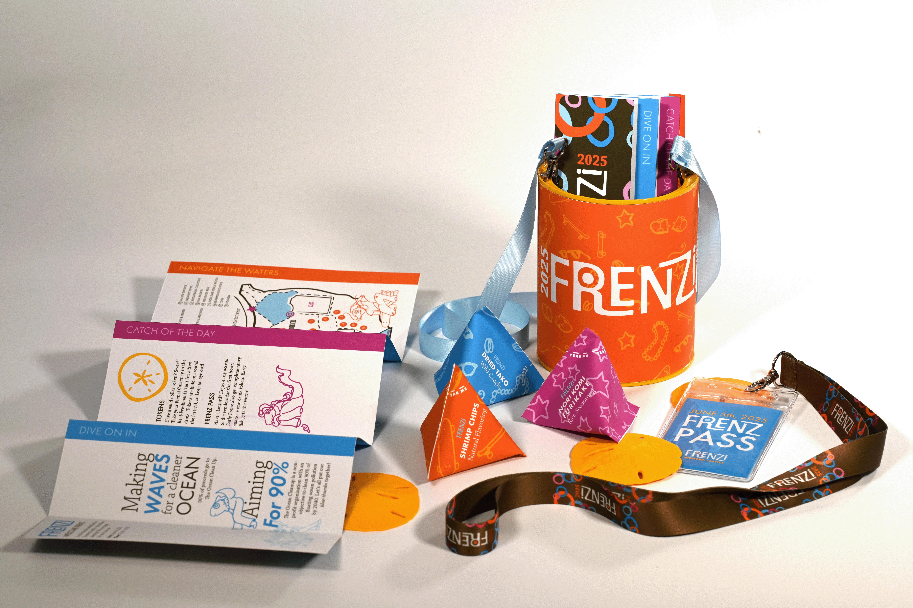

Frenzi
Seafood Festival 2025
Branding and Identity

About The Project
Goal
Branding for Frenzi Seafood Festival 2025.
What is Frenzi?
Frenzi is a seafood festival where seafood enthusiasts try hand crafted dishes in Fremont, Seattle. Frenzi is dedicated to ethically sourcing their seafood and taking care of our oceans. Proceeds go to The Ocean Clean Up.
"We are a festival that is not afraid to try new things and get our utensils dirty—we’ll eat our food and play with it too."
Design
By using classic 2000s colors with hand-drawn characters for our packaging, we are able to create a nostalgic identity that is quirky but also resonates with our 21-30 y/o demographic.
Scope
Project Type: Brand Identity
Software: Adobe Photoshop/ Illustrator
Final Product Images







